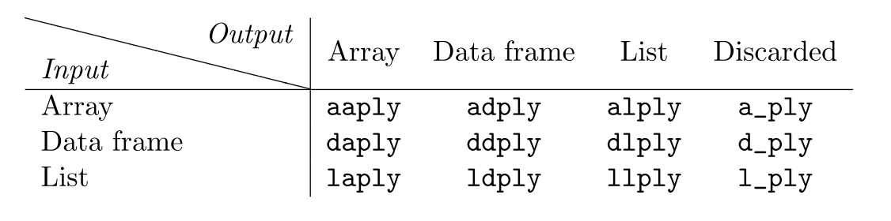

Chapter 14 plyr
14.1 Tidyverse and plyr
For this document you will need to install and load the family the package plyr functions. To install the package refer to Section 8.
The tidyverse is a collection of packages that share a unique underlying philosophy, frame work, and syntax. There are approximately 20 tidyverse packages, but the core ones are ggplot2, dplyr, tidyr, readr, purr, tibble, stringr, and forcats. You can install these packages individually or all at once using by simply using the command install.packages("tidyverse").
We will be focusing on the plyr package for now. The functions and topics that we that we will be covering can be found in Wickham (2011).
14.2 Iteration with plyr
The main focus of the plyr package is to formalize cleaning, and implementing functions to our data sets. In many data sets we have to split the data into the desired subsets, apply a function, and then reformat the data with adjustments. This process appears over and over again. When we apply or implement a function to different components of a data set we typically use an apply method or for loops, Sections 10 and 9 respectively. Often times this can take several lines of code to accomplish.
The plyr package aims to reduce the amount of steps it takes to accomplish these tasks. In general, the functions in the plyr package are considered iteration techniques and are closely related to the apply functions in base R. In some cases, a plyr preforms exactly the same as the apply functions, both in terms of efficiency and in the task accomplished.
Although the plyr package contains similar functions to base R, some users find this plyr functions to be more intuitive. In addition, the plyr functions generally have more features and can simplify code. The techniques in the plyr package are known as the split-apply-combine method. They work to split a data set in the desired way, apply the desired function, and combine and return the desired output to the user all in one step. This philosophy of the plyr functions is inspired by Google’s map-reduce technique of analyzing their data sets.
14.3 Syntax
For the plyr package an array includes the special cases of vectors (1d arrays) and matrices (2d arrays). Arrays are made out of any atomic vector: logical, character, integer, or numeric. A list is a non-atomic array, which is is an array that can contain any type of data structure. A data frame is a 2d array where each column can be a different atomic class.
The functions of the plyr package have the same general structure: ?*ply(). All plyr functions have simple and informative names, the first (?) and second (*) characters describe the input and output data types, respectively. Several inputs and outputs are supported: a = array, d = data frame, l = list, and _ = discarded.
- first character (input type): a, d, l
- second character (output type): a, d, l, _ (nothing)
A table of the 12 core functions is directly below.

Similarly to the apply functions, the functions have two or three main arguments depending on the input.
a*ply(.data, .margins, .fun, ...)d*ply(.data, .variables, .fun, ...)l*ply(.data, .fun, ...)
The first argument .data contains the object that will be split, processed, and recombined. The second argument .variables or .margins describes how to split up the input into pieces. The third argument .fun is the processing function that is to be applied to each piece.
The tidyverse uses function arguments to start with a “.” in order to differentiate the plyr arguments with any arguments to be passed to the processing function (.fun).
In general, the plyr functions have a very similar set up to the apply functions in base R. Recall apply(ARRAY, MARGIN, FUN).
14.4 Inputs
Each input type has various rules for how to split it up.
Arrays are sliced by dimension into lower-dimensional pieces.
Data frames are subsetted by combinations of variables
Each element of a list is separated.
The way each input is split up actually doesn’t depend on the class of the data object, but the method that it responds to. For example, an object split using a*ply() must respond to dim() and accept multidimensional indexing. Thus, you can use a data frame as a data input for a*ply(). For d*ply(), the data must work with split() and must be able to be converted into a list. Hence, many matrix objects can be used as inputs for d*ply(). For l*ply() the data must work with length() and [[ indexing.
14.4.1 Input: a*ply() {-}
For the a*ply() functions we have .margins argument which works the same as the MARGIN argument for apply().
.margins=1: Slice up into rows..margins=2: Slice up into columns..margins=3: Slice up into individual cells.
14.4.2 Input: d*ply()
When using a data frame we typically want to split the data into groups based on combinations of variables. We can do this using the .variables argument. This argument supports multiple forms of input. We can use a character vector of column names, c("Var1", "Var2") or use .(var1, var2).
For example, to find the number of observations that have the same vs and am in the mtcars data set, we can use the following commands
## am
## vs 0 1
## 0 12 6
## 1 7 7## am
## vs 0 1
## 0 12 6
## 1 7 714.4.3 Input: l*ply()
Lists do not have an additional argument to break up the data. The function is simply applied to each element of the list.
14.5 Outputs
The output type defines how the data is recombined after the processing function, and how the data is labeled.
14.6 Helpers
The plyr package has several different “helper” features that are common for data analysis problems.
arrange: re-order the rows of a data frame by specifying the columns to order bymutate: add new columns or modifying existing columns, liketransform, but new columns can refer to other columns that you just created.summarise: likemutatebut create a new data frame, not preserving any columns in the old data frame.join: an adapation of merge which is more similar to SQL, and has a much faster implementation if you only want to find the first match.colwise: make any function work colwise on a dataframecount: quickly count unique combinations and return return as a data frame.failwith: sets a default value to return if the function throws an error. For example,failwith(NA, f)will return anNAwheneverfthrows an error. Theprogress: allows you to monitor the progress of long running operations. There four different options: + “none”, the default, no progress bar is displayed
+ “text”, provides a textual progress bar. + “win” and “tk” provide graphical progress bars for
14.7 Examples
We will use the baseball data set in the plyr package.
## id year stint team lg g ab r h X2b X3b hr rbi sb cs bb so ibb
## 1 aaronha01 1954 1 ML1 NL 122 468 58 131 27 6 13 69 2 2 28 39 NA
## 2 aaronha01 1955 1 ML1 NL 153 602 105 189 37 9 27 106 3 1 49 61 5
## 3 aaronha01 1956 1 ML1 NL 153 609 106 200 34 14 26 92 2 4 37 54 6
## 4 aaronha01 1957 1 ML1 NL 151 615 118 198 27 6 44 132 1 1 57 58 15
## 5 aaronha01 1958 1 ML1 NL 153 601 109 196 34 4 30 95 4 1 59 49 16
## 6 aaronha01 1959 1 ML1 NL 154 629 116 223 46 7 39 123 8 0 51 54 17
## hbp sh sf gidp cyear
## 1 3 6 4 13 1
## 2 3 7 4 20 2
## 3 2 5 7 21 3
## 4 0 0 3 13 4
## 5 1 0 3 21 5
## 6 4 0 9 19 6What we will explore is the performance of a batter over his career. To get started, we need to calculate the “career year”, i.e. the number of years since the player started playing.
## id year stint team lg g ab r h X2b X3b hr rbi sb cs bb so ibb
## 1 aaronha01 1954 1 ML1 NL 122 468 58 131 27 6 13 69 2 2 28 39 NA
## 2 aaronha01 1955 1 ML1 NL 153 602 105 189 37 9 27 106 3 1 49 61 5
## 3 aaronha01 1956 1 ML1 NL 153 609 106 200 34 14 26 92 2 4 37 54 6
## 4 aaronha01 1957 1 ML1 NL 151 615 118 198 27 6 44 132 1 1 57 58 15
## 5 aaronha01 1958 1 ML1 NL 153 601 109 196 34 4 30 95 4 1 59 49 16
## 6 aaronha01 1959 1 ML1 NL 154 629 116 223 46 7 39 123 8 0 51 54 17
## hbp sh sf gidp cyear
## 1 3 6 4 13 1
## 2 3 7 4 20 2
## 3 2 5 7 21 3
## 4 0 0 3 13 4
## 5 1 0 3 21 5
## 6 4 0 9 19 6baseball2006 = subset(baseball, year == 2006)
ddply(baseball2006, c("year", "team"), summarize,
homeruns = sum(hr))## year team homeruns
## 1 2006 ARI 35
## 2 2006 ATL 7
## 3 2006 BAL 19
## 4 2006 BOS 35
## 5 2006 CHA 43
## 6 2006 CHN 26
## 7 2006 CIN 30
## 8 2006 CLE 6
## 9 2006 COL 1
## 10 2006 DET 15
## 11 2006 HOU 23
## 12 2006 KCA 24
## 13 2006 LAN 17
## 14 2006 MIL 9
## 15 2006 MIN 8
## 16 2006 NYA 19
## 17 2006 NYN 74
## 18 2006 OAK 39
## 19 2006 PHI 8
## 20 2006 PIT 18
## 21 2006 SDN 32
## 22 2006 SEA 11
## 23 2006 SFN 65
## 24 2006 SLN 20
## 25 2006 TBA 0
## 26 2006 TEX 12
## 27 2006 TOR 12
## 28 2006 WAS 0How many years did each baseball player play.
id_num_years = ddply(baseball, # Data set
"id", # How to Split Data
summarize, # Create new data frame with results
length(year)) # How many values are in each split subset of data
head(id_num_years)## id ..1
## 1 aaronha01 23
## 2 abernte02 17
## 3 adairje01 15
## 4 adamsba01 19
## 5 adamsbo03 15
## 6 adcocjo01 17id_years_teams = ddply(baseball, # Data set
"id", # How to split up the data set
summarise, # Generate a new data frame for results
duration = max(year) - min(year),# New column called duration
nteams = length(unique(team))) # New column called nteams Find the number of total hrs for each year, append it to the existing data set.
hr_total_year = ddply(baseball, # Starting data set
"year", # How to break up the data set
transform, # Make a new column to original data set
total.hr = sum(hr)) # New column is the total num of home runs in a year.
head(hr_total_year)## id year stint team lg g ab r h X2b X3b hr rbi sb cs bb so ibb hbp
## 1 ansonca01 1871 1 RC1 25 120 29 39 11 3 0 16 6 2 2 1 NA NA
## 2 forceda01 1871 1 WS3 32 162 45 45 9 4 0 29 8 0 4 0 NA NA
## 3 mathebo01 1871 1 FW1 19 89 15 24 3 1 0 10 2 1 2 0 NA NA
## 4 startjo01 1871 1 NY2 33 161 35 58 5 1 1 34 4 2 3 0 NA NA
## 5 suttoez01 1871 1 CL1 29 128 35 45 3 7 3 23 3 1 1 0 NA NA
## 6 whitede01 1871 1 CL1 29 146 40 47 6 5 1 21 2 2 4 1 NA NA
## sh sf gidp cyear total.hr
## 1 NA NA NA 1 7
## 2 NA NA NA 1 7
## 3 NA NA NA 1 7
## 4 NA NA NA 1 7
## 5 NA NA NA 1 7
## 6 NA NA NA 1 7Add several new columns to a data set with the mutate option.
add_columns = ddply(baseball, # inputted data set
"year", # How to split data
mutate, # Want original data set with (1+) new columns
mu = mean(hr), # New column #1
sigma = sd(hr), # New column #2
cv = sigma/mu) # New column #3
head(add_columns)## id year stint team lg g ab r h X2b X3b hr rbi sb cs bb so ibb hbp
## 1 ansonca01 1871 1 RC1 25 120 29 39 11 3 0 16 6 2 2 1 NA NA
## 2 forceda01 1871 1 WS3 32 162 45 45 9 4 0 29 8 0 4 0 NA NA
## 3 mathebo01 1871 1 FW1 19 89 15 24 3 1 0 10 2 1 2 0 NA NA
## 4 startjo01 1871 1 NY2 33 161 35 58 5 1 1 34 4 2 3 0 NA NA
## 5 suttoez01 1871 1 CL1 29 128 35 45 3 7 3 23 3 1 1 0 NA NA
## 6 whitede01 1871 1 CL1 29 146 40 47 6 5 1 21 2 2 4 1 NA NA
## sh sf gidp cyear mu sigma cv
## 1 NA NA NA 1 1 1.154701 1.154701
## 2 NA NA NA 1 1 1.154701 1.154701
## 3 NA NA NA 1 1 1.154701 1.154701
## 4 NA NA NA 1 1 1.154701 1.154701
## 5 NA NA NA 1 1 1.154701 1.154701
## 6 NA NA NA 1 1 1.154701 1.154701You can also plot with plyr.
baseball2005_2007 = subset(baseball, year>=2005)
par(mfrow = c(1, 3))
d_ply(baseball2005_2007, "year", transform, hist(hr, main = unique(year)))
Creating a custom function.
measures_of_center = function(x){
# the_mean = mean(x)
# the_median = median(x)
# the_geo = exp(mean(log(x)))
# the_harm = 1/mean(1/x)
# centers = c(the_mean, the_median, the_geo, the_harm)
# names(centers) = c("Mean", "Median", "Geometric", "Harmonic")
centers = summary(x)
return(centers)
}
baseball_stats = subset(baseball, select = c("year","hr", "rbi", "sb"))
# Return an array
head(daply(baseball_stats, .(year), colwise(mean)))##
## year hr rbi sb
## 1871 1 22.28571 3.857143
## 1872 0.07692308 20.53846 1.538462
## 1873 0.5384615 30.92308 1.692308
## 1874 0.8666667 29 3.333333
## 1875 0.7647059 31.58824 5.705882
## 1876 1.066667 30.13333 NA## year hr rbi sb
## 1 1871 1.00000000 22.28571 3.857143
## 2 1872 0.07692308 20.53846 1.538462
## 3 1873 0.53846154 30.92308 1.692308
## 4 1874 0.86666667 29.00000 3.333333
## 5 1875 0.76470588 31.58824 5.705882
## 6 1876 1.06666667 30.13333 NA## $`1871`
## hr rbi sb
## 1 1 22.28571 3.857143
##
## $`1872`
## hr rbi sb
## 1 0.07692308 20.53846 1.538462
##
## $`1873`
## hr rbi sb
## 1 0.5384615 30.92308 1.692308
##
## $`1874`
## hr rbi sb
## 1 0.8666667 29 3.333333
##
## $`1875`
## hr rbi sb
## 1 0.7647059 31.58824 5.705882
##
## $`1876`
## hr rbi sb
## 1 1.066667 30.13333 NAThere are even more functions that we have not considered in this package. For example, we have an mapply() version for plyr.
## mean sd V1 V2 V3 V4 V5
## 1 1 1 0.3068252 2.597985 1.6701004 2.478022 1.146168
## 2 2 2 1.9081973 2.540262 4.0358842 1.403136 1.174000
## 3 3 3 4.5592248 0.308029 0.2552031 2.892366 1.389544
## 4 4 4 4.2569431 3.088500 8.6408356 7.598323 5.176289
## 5 5 5 -0.1205350 6.274319 5.8327707 1.981088 5.96310314.8 Comparing Base R, Loops, plyr
## user system elapsed
## 0.247 0.001 0.250## user system elapsed
## 0.004 0.000 0.005## user system elapsed
## 0.199 0.045 0.243References
Wickham, Hadley. 2011. “The Split-Apply-Combine Strategy for Data Analysis.” Journal of Statistical Software 40 (1): 1–29.